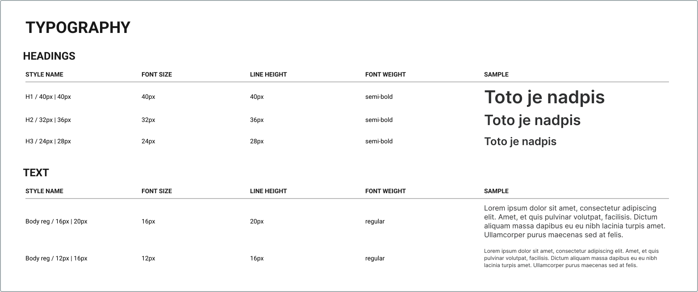
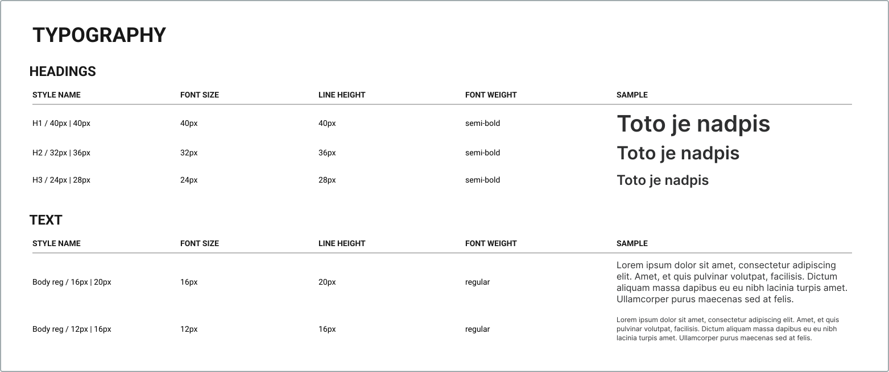

Design System
Tato část je o design systému. Design system je kolekce znovupoužitelných komponent, které mohou být použity dohromady k vytvoření webové stránky nebo aplikace. Nebudu zde popisovat jak design system vytvořit, protože to už také záleží na programu, který k navrhování webových stránek používáme. Ale dozvíte se tu jak jej můžete rozdělit do kategorií.
Pokud s designem teprve začínáte, tak je možná lepší jej ze začátku nebrat tolik vážně. Na začátku se hlavně chcete tak nějak naučit používat program, který pro navrhování používate a nějaké komponenty a podobné věci se vám moc řešit nechtějí. Teda alespoň mě se do toho nechtělo když jsem začínal s Figmou. Myslím že když začínáte, tak stačí si akorát určit barvy, gridy, možná typografii a ostatní věci moc neřešit. Až získáte trochu zkušeností, tak až potom je možná na čase začít brát design system trochu vážněji. Já osobně design system moc vážně neberu, na začátku si vytvořím akorát základ a později si v průběhu návrhu vytvářím komponenty, které mohu později použít znovu. Do nějakého jejich třídění a popisování se mi ale moc nechce. Jediné co si pořádně roztřídím a popíšu je akorát základ.
Kategorie design systému
Ukážu vám, jak jsem se naučil a tak nějak třídím design system já. Naučil jsem se to v tomto Udemy kurzu a myslím že je to hodně dobrý způsob jak design system třídit. Není to však jediný způsob, klidně si můžeme design system třídit i vlastním způsobem.
Způsob vytváření design systemu, který vám zde chci popsat, se třídí na 3 kategorie: základ, komponenty a recepty.
Základ
Do kategorie základ patří základní věci jako jsou barvy, typografie, ikony, a tak dále. Podle tohoto základu potom vytváříme komponenty jako jsou třeba tlačítka nebo různé karty. Takže si stanovujeme jaké písmo budeme používat, jaké barvy nebo třeba jaké typy gridů budeme při návrhu používat.
Zde jsem vypsal pár věcí, které bychom do této kategorie mohli zařadit:
- Barvy
- Typografie
- Ikonografie
- Gridy
- možná i něco dalšího...
Pro ukázku jsem zde přidal dva obrázky ukazující barvy a typografii, které jsem použil pro návrh těchto webových stránek.
 

Komponenty
Do kategorie komponenty patří znovupoužitelné UI elementy jako jsou tlačítka, karty, inputy, navigace, a tak podobně.
Zde jsem vypsal pár věcí, které bychom do této kategorie mohli zařadit:
- Tlačítka
- Karty
- Inputy
- Navigace
- Checkbox
- a další...
Recepty
Do kategorie recepty patří komponenty, které jsou složené z jednodušších komponent. Může sem například patřit nějaký formulář složený z inputů a tlačítek, nějaká komponenta skládající se třeba ze tří karet rozmístěných vedle sebe, a tak podobně.